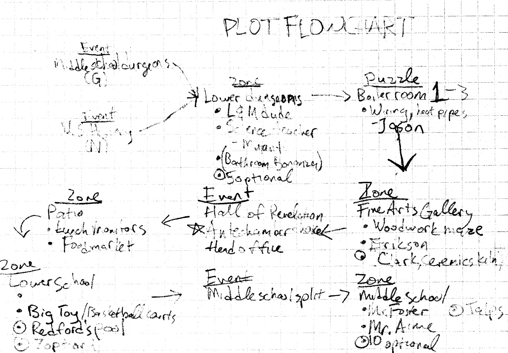
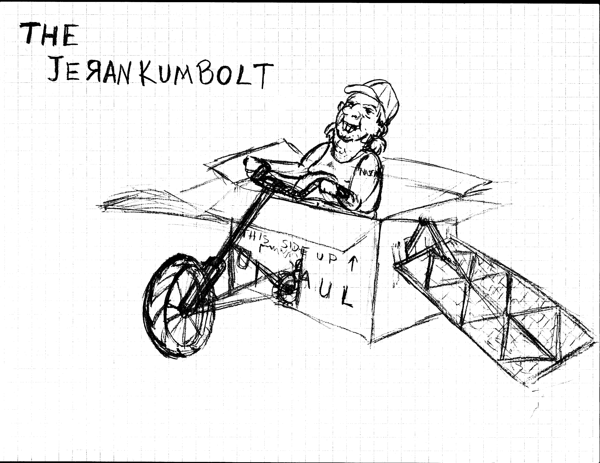
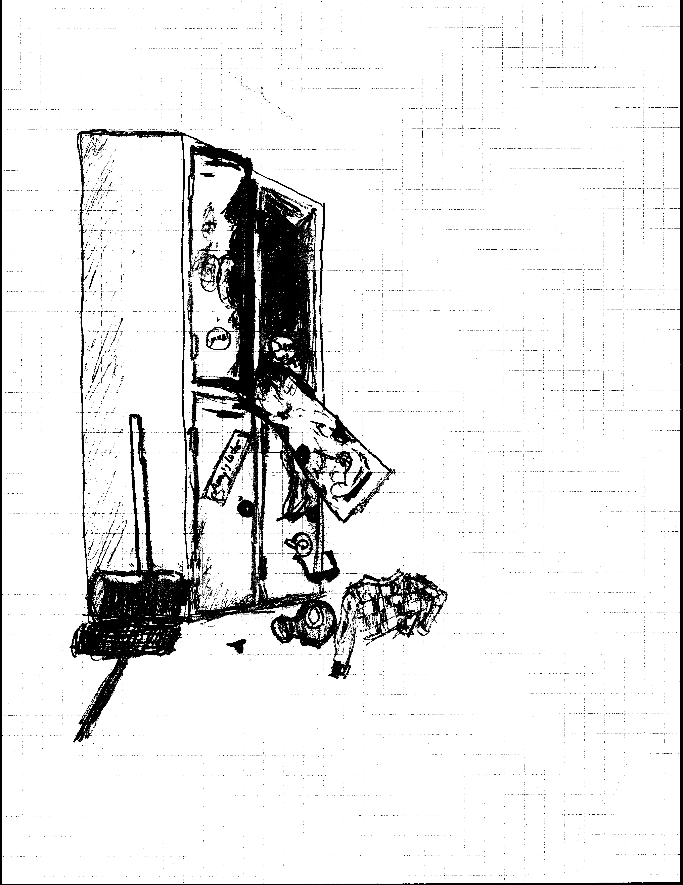
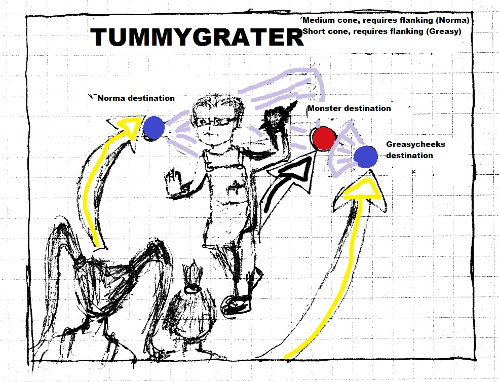
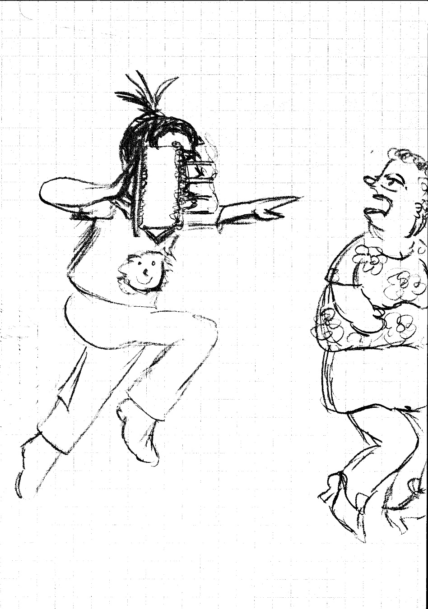
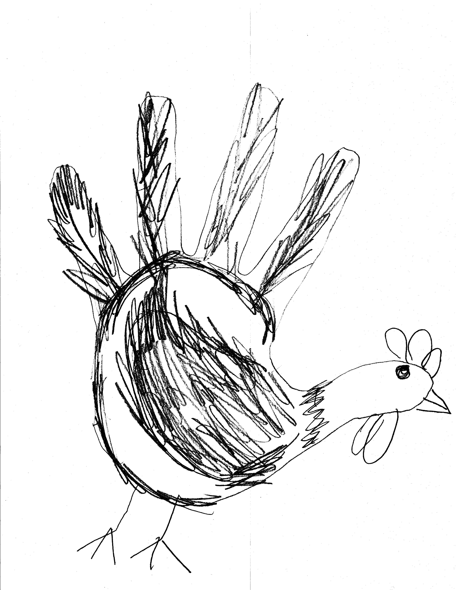

Escape From Head Royce
Plot
The administration at the Mormon Temple wish to expand their property range. So far they have been successful in taking over all of Lincoln Ave. All? No! There is one tiny property which continues to resist the Mormon forces! A small private school, Head Royce! Although he is pushed by the faculty, Headmaster Paul refuses to sell the property. Little to his knowledge, however, the teachers have collaborated with the Mormons to take the school by force...
One day, there is a mysterious power outage at the school. The teachers gather in the lounge to discuss their plan of action. The wicked shadow of a knife hovers over Headmaster Paul. A look of horror crosses his face as maniacal laughter erupts across the campus as the teachers realize what has happened. They begin to enslave their students, beginning their new "teaching" process in the classrooms, while imprisoning the more problem students beneath the school.
Enter, Norma and Greasycheeks, sister and brother in 12th and 7th grade, respectively. Though trapped in their own dungeons, little do they know the great fate before them, and their grand role in the ultimate liberation of the school.
Norma, stuck in the U. S. History dungeon, is slowly being tortured to death with a lecture on Neo-Liberalism. Professor Walker, noticing this, flies into a rage and writes up an assignment for a research paper. Upon hearing the word "research" Norma snaps, picks up a chair with wheels and hurls it across the room, knocking Professor Walker unconscious. Armed with only her wits and a Rock-on-a-Shoelace, she ventures out into the upper school halls, fear and determination in her heart.
Greasycheeks sits in a cell with his best friend, Ian, and Birna, a student who has been bound and gagged. He devises a method of escape, using bottlecaps on his powerful knuckles, able to now smash the lock to his cell. Before leaving, he feels that it might be cruel to leave Birna bound and gagged, so they un-gag him. Birna begins to drool and spray spit as Greasycheeks and Ian begin running. Ian trips and is swept up by the wave of drool and screams "HELP ME, GREASYCHEEKS." But Greasycheeks cannot turn back to help, because the spit will get him too. As he runs, he carries the burden of having caused his friend's grisly demise.
Control Norma and Greasycheeks when they meet in the upper school dungeons in their quest to ultimately Escape From Head Royce, or to confront the double threat of their teachers allying with the Mormon forces in order to liberate their school from its grasp. Join forces with The Mutant, Jason the Janitor, Ian and Alec while unleashing your combined powers upon your enemies. Liberate classrooms from teachers in order to increase the strength of your army, construct siege weapons in preparation for the final battle, and discover the secrets that lie within Head Royce School.
Non-linearity
Multiple endings are available to Greasycheeks and Norma as soon as they are controllable. The entire school is accessible very early in the game (after recruiting Jason, who has the keyset to the entire school). Though there is an order suggested through map layout, and dialogue options, events and boss-fights for specific areas (the upper, middle and lower schools) are triggered only after certain exploratory scripts are activated. Receiving the "best" ending, requires the liberation of at least 40 classrooms, and the reclamation of the Big Toy, an oasis in the lower school currently chained and condemned as "unsafe."
A List of Possible Endings
- The worst: If you leave the school before liberating any classrooms, (and especially if you saw dead Headmaster Paul [shame on you!]) you see Norma and Greasycheeks fleeing the school. They are sent back to school by their parents the next day, where they become Mormon construction workers, building a new parking lot where their school once was.
- The bad: If you didn't liberate at least 20 classrooms, you won't get to defeat the final boss, as the temple doors will be barred and instead fight a string of random battles where you eventually become overwhelmed by the number of Mormon forces. You see Norma and Greasycheeks running away together from the temple.
- The good: If you liberated at least 20 classrooms but did no side quests (including the Big Toy), Norma and Greasycheeks hitchhike their way home into the sunset after defeating the High Administrator.
- The better: If you liberate the at least 20 and tried some side quests, but completely avoided the "Bathroom Bonanza" games, Norma and Greasycheeks ride off into the sunset after defeating the High Administrator in an orange crate on wheels, but 1/3 of the way through the credits, a wheel flies off, the crate tips over and they fall out. They spend the rest of the credits trying to put the spare wheel on.
- The best: If you liberate the entire school and did all the sidequests, and tried at least 3 "Bathroom Bonanza" games, Norma and Greasycheeks gloriously ride off into the sunset after defeating the High Administrator on an orange crate tied to a skateboard.
Game tuning
Game difficulty scales to the number of classrooms liberated. At the end of each section of the school, any teachers beaten during classroom liberation lock themselves in the administrative office where they band together with the head of the respective school. When you choose to open that door, the head of the school and any beaten teachers join forces and attack you in an adequately dramatic and cinematic event. The more classrooms are liberated, the harder the confrontation will be.
The number of Mormon forces in the final field battle is static, and it is possible to win with only 10 classrooms liberated. However, the "annoyance factor" of random encounters while in the Mormon Temple zone is greatly reduced by the number of liberated classrooms, as students will be battling encounters for you while you make your way through the final mazes.
Setting
School is a Dungeon
From mysterious elevators, to rattling cages, to the screams of your peers, the school haunts you with what it has become. A new world order has developed in a matter of hours. Familiar locations are now foreign, your friends are now your closest allies, hardened by fear and determination, and your mentors have become your enemies. Unwatched recesses hum with the whisper of escaped lab rats. You realize, with trepidation, that they, too, might be watching. Forgotten gears grind, walls revolve and transform into new modes of transportation. When you open the door to the next classroom, you'll wonder how your teachers' darkest, most secret whims have manifested.
Rich World Interaction
See a cucumber in a tree? Stack up and grab it! See a telephone? Call someone. Want some loot? Get a hammer and start banging those lockers. Want to make it rain indoors? Just bring Norma near a fire alarm (and make sure your party can't hold her back).
School is what you make of it. Mischief is rarely without reward. Each item and location is limited only by your imagination. Because, where else, outside of a real theater, are you going to be able to put on a jigging-themed musical complete with dramatic lighting and surround sound?
Almost every location has an event. The lower school basketball courts have been taken over by wild children (fed an endless supply of sweet tarts and radioactive paste). Knock them down with basketballs before they overrun your party!
Almost everything is an accessory. When you finally realize that the "Armani Polo" accessory gives you no armor, you just might keep it on, because you love the fact that you're beating up teachers while looking like a $100 douche.
Art Direction
Dark colors, smoky ambiance, emphasis on red and the absence of blue. Broken, splintered edges on wooden 20th century architecture, vivid structures like The Big Toy pop with color. Lots of chain and chain links. The sky is oppressive.
Emphasis is placed on character modeling, with great attention given to the uniqueness of each professor and the discipline he or she represents. Think inquisition/the backside of religion. Almost all character models are some kind of human, with the exception of Disco, the cat.
Items are contemporary and mundane--a mishmash of clothing, food and tools that can be fashioned into weapons (laser pointers, sharpies, wrenches).
Music
Grit and liberation, descent and then rebirth, heavy on full orchestral pieces with operatic scores.
Watch a performance of the Escape From Head Royce theme.
Characters
A Spark of Madness
closeNorma is 17 years old. Having grown up with her brother Greasycheeks in sleepy suburbia, she has developed her own sort of fashionsense. Given to poop jokes and bouts of technological inspiration, half manic and half genius, she creates tools from the most mundane of materials (but, really, what is mundane in a school under siege?). Her favorite accessories include fake nails, 1960s diva glasses, and wrenches on ropes.
Strengths: Technology attacks, physics.
Selected Technology Attacks:
- Throttle: Deathblow to 1 enemy smaller than Norma.
- Crackin' open a barral'a whup@$$: Norma damages all enemies.
- Partially Hydrogenated Soybean Woman: Norma's attack increases and she gains berserk status.
The Stomach of the Party
closeGreasycheeks is a 12-year old gourmand. Graced with a cute topknot of hair, and crooked teeth, this wild child has a heart of gold. He also enjoys eating anything and everything. Consequently, he tries very hard to hide his growing gut by wearing shirts with circular patterns on their centers ("It's a sun, not my gut bursting out my shirt"). He has a stomach of steel, which comes in handy when handling schoolyard bullies.
Strengths: Physical attacks, food.
Selected Technology Attacks:
- Tummy Attack: Greasycheeks body slams 1 enemy.
- I'm Hungry: Greasycheeks takes a bite out of an enemy and gains a status effect.
- Duh duh duh duh! Stampede!: Damages all enemies, damage rises with liberated classrooms.
Tabula Rasa
closeThe last vestige of his human identity vanished in the Head Royce's dungeons. The result of a failed (or too successful) science experiment, The Mutant has no name, no past, and until now, no future. He accompanies the team after they liberate him by disposing of Professor Chu. Physically strong, The Mutant was also built to be attuned to the computer in the lab.
Strengths: Physical attacks, superhuman strength.
Selected Technology Attacks:
- Forward: The Mutant charges enemies in a line.
- Refresh: The Mutant heals party.
- Back: The Mutant revives a party member
The World Expands
closeA former employee of the school, Jason was the first janitor to rebel against the Mormon takeover. His rebellion was short-lived, however. When Norma and Greasycheeks release him from the upper reaches of the Boiler Room, he gladly joins, bringing with him a bevy of knowledge about the school's underground networks, and a key to every door. Jason arms himself with garbage to throw at his enemies.
Strengths: Ranged attacks, school lore.
Selected Technology Attacks:
- Flying Lutefisk: Jason damages and poisons one enemy.
- Boiler Room Hazing: One enemy is carried off the field by a posse of janitors.
- Misfired Caulking Gun: Jason blinds, silences, and damages one enemy.
Reality Optional
closeRobert's best friend, swept up in the drool flood for parts unknown, Ian is a spunky little child. He once loved working in the theatre department, running lights for their shows. Birna, perhaps knows what happened to him. One day he might appear again (and he definitely is not shrunk in a backpack, requiring the need of a biggener, created by arming Norma with a wrench and taking her to the Van de Graaff generator.)
Strengths: Technology attacks, theatre, definitely not running.
Selected Technology Attacks:
- Superhero Grin: Ian blinds one enemy with super white teeth.
- Doodle: Random damage.
- Fry Glasses: Ian amplifies lighting with thick glasses to set area on fire.
A Heroic Swoop
closeAt first an enigmatic figure, swinging down on a rope near the end of battles, Ian's brother comes armed with a compound bow (for LARPing!) and a leatherman. This bearded hero comes with a strong sense of justice, helping the party from a distance with their quest to free the school. Recruiting him requires either distraction, in the form of Disco, the cat, or possibly a more direct method, involving hedge clippers.
Strengths: Ranged attacks, swinging on ropes, cats.
Selected Technology Attacks:
- "Fetch me mah leatherman!" (pliers): Alec manipulates one nearby item on the battlefield.
- "Fetch me mah leatherman!" (knife): Alec slices enemies in a circle around him.
- "Fetch me mah leatherman!" (emory board): Alec files his nails, increasing attack.
Gameplay
To Arms!
Escape From Head Royce centers around the unique encounters produced by different professors, all take place in highly cluttered 2-dimensional maps. Taking up to three party members into battle (the rest stay at the Big Toy and watch TV, or make paper turkeys), the game offers a unique fighting system with five unique battle options, "move," "strike," "defend," "technology," and "consume."
The "move" phase is vitally important, as it creates the timeline for the other four actions. The core battle mechanic involves setting a "move" line for each character based on predicted enemy action in order to open up position-specific technology attacks. Adding depth to this challenge will be the utilization of "physical" type characters to distract enemies and keep them in position, "ranged" type characters to give more forgiving technology ranges, and "technology" type characters who are better able to move into the best position.
"Strike" involves a normal physical attack, aided somewhat by positioning. "Defend" is an action best used in retreat. "Technology" involves location-specific attacks created by special found items. "Consume" uses food items in inventory to recover health.
Monster Intent
Part of the challenge of each battle will be interpreting the vivid facial expressions and body language of enemies. Have a history professor backing up slowly with a history book shield? Throw a boomerang behind him. Is a Mormon goon charging at you with a grail of holy water? Have two characters leap to the sides, flank him and unleash a devastating technology combo. Slippery little science professor running around the lab throwing glassware at you? Break all his glassware then pummel him until he sits still.
Technology
Almost all special attacks (Technology, or, "Tech" attacks) are based upon having the correct item in your inventory. Jason, adept at finding objects in the school, can show Norma objects that she can fashion into special attacks for various characters. Each of these technology attacks has a specific attack area, either circular, column-shaped, or cone-shaped, and some have an optimum enemy targeted area. Bringing two technology attacks together from different characters at the same time can create a new technology combo with unique results.
 Example Techs:Norma: Ragnarok The Bloodthirsty Cheese-grater - short cone damage, requires cheese-grater from Norma's locker.
Greasycheeks: Happy Birthday - single target in small column damage, also heals Greasycheeks, requires birthday cake from kitchen.
Jason: Boiler Room Hazing - single target in large circle damage, requires boiler room whistle from poolside.
Norma and Jason: Pulp (Ragnarok + Hazing dual tech) - 2 targets in large circle damage, stronger than individual techs.
Castle of Solace
After reclaiming the lower school, the Big Toy jungle gym will become your fort, and also your home. Characters left outside of the active party will do what they can to improve the quality of living inside, either using their decorating skills (Ian will draw pictures with his magic marker) and their technology skills (Jason may either install plumbing or an air conditioning system to keep things nice and cool. Norma will always just build a catapault. Greasycheeks will start a bonfire fueled by any old homework items you find). Different features of the Big Toy will alter the way non-active characters passively level up, and will ultimately provide an "inspiration" experience point bonus to active characters. Aiding you in homebuilding will be the legions of lower schoolers you liberate, who will "improve" upon the general architecture of the Big Toy with rulers, plastic chairs, and UHU stic. If all classrooms are liberated, the Big Toy will become a monument to freedom and will be large enough to lend projectile and technology support in the final siege battle.
Reclaiming What's Yours (minigames)
The main minigame area of Escape From Head Royce is the upper school dungeon bathrooms, as, we all know, bathrooms are just a bonanza of fun.
- Aim the trash - Select angle and velocity of empty toilet paper rolls inside stalls towards the trash cans. If Jason plays, he can throw his own trash and smack items off the ceiling.
- Guess the urinal cakes - From your characters' olfactory descriptions alone ("This urinal smells minty!" "This urinal smells like old tinkle") decide which urinals have cakes in them (Note: olfactory descriptions have no bearing on which urinals have urinal cakes in them)
- Mirror mirror - Compete between your characters to create the most grotesque facial expression!
- The Flume Ride - Whenever you bring Greasycheeks to the bathroom, he will clog a stall and overflow it just by being in its mere presence. If you have a garbage can lid in your inventory, ride it down branching pathways to pick up items, or, perhaps to steer to the middle school dungeons... (Note: if you do not have the garbage can lid it is game over)